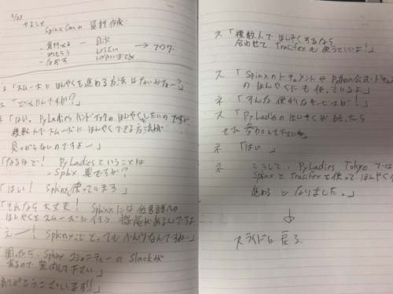

鉄は熱いうちに打て
=============================
SphinxCon JP 2018 に参加しました¶
2018-11-28
SphinxCon JP 2018 で、発表してきました。 運営の方、参加者の方、ありがとうございました。
基調講演の方が、遅刻するということで、なぜか、最初の発表に。
今日の台本
#sphinxjp 2018カンファレンス、基調講演の @tk0miya 氏が遅れて突然トップバッターになった @okusama27 (@ 株式会社VOYAGE GROUP - @voyage_group_pr in 渋谷区, 東京都 w/ @koedoyoshida) https://t.co/AfC84HLjsM pic.twitter.com/xWZiwTfYo3
— Takayuki Shimizukawa (@shimizukawa) 2018年11月28日
基調講演の方が遅刻で発表順が繰り上がって1番になった！ #sphinxjp
— kame-chan (@okusama27) 2018年11月28日
みんなが真面目な話を聞き飽きた頃にちょっとネタ的に入れようと思って練習してた小芝居を最初にやることに（汗）
私以外の人は真面目でディープなSphinxの話だったので、ある意味良かったかも。
自分のホーム以外での発表かつ、 XXX Con と名のつく会での初発表で緊張マックスでした。
無事に終わってよかったです。
#sphinxjp 審査員の皆さん（違 pic.twitter.com/ofBeyphgeT
— Takayuki Shimizukawa (@shimizukawa) 2018年11月28日
気を抜いてたら写った。
もう、疲れたんで寝ようと思ったんですが、 @shimizukawa さんの発表を見て、TwitterのOGPを入れるべく、ねむーって思いながらこのブログを書いてます。
かしゅー さん、早いよ。
テスト https://t.co/TUcGs1h42y #sphinxjp
— かしゅー (@kashew_nuts) 2018年11月28日
@kashew_nuts はもう入れたよ https://t.co/NKJueZRbCx
— Takayuki Shimizukawa (@shimizukawa) 2018年11月28日
そんなわけで、出たらいいなーと思いつつ、ビルドしてみようと思います。
おやすみなさい。